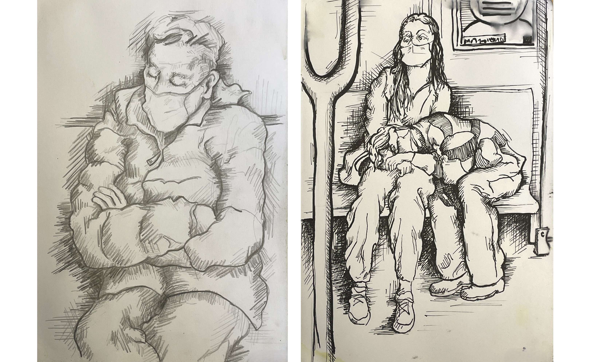
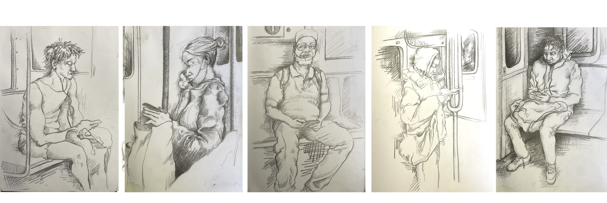
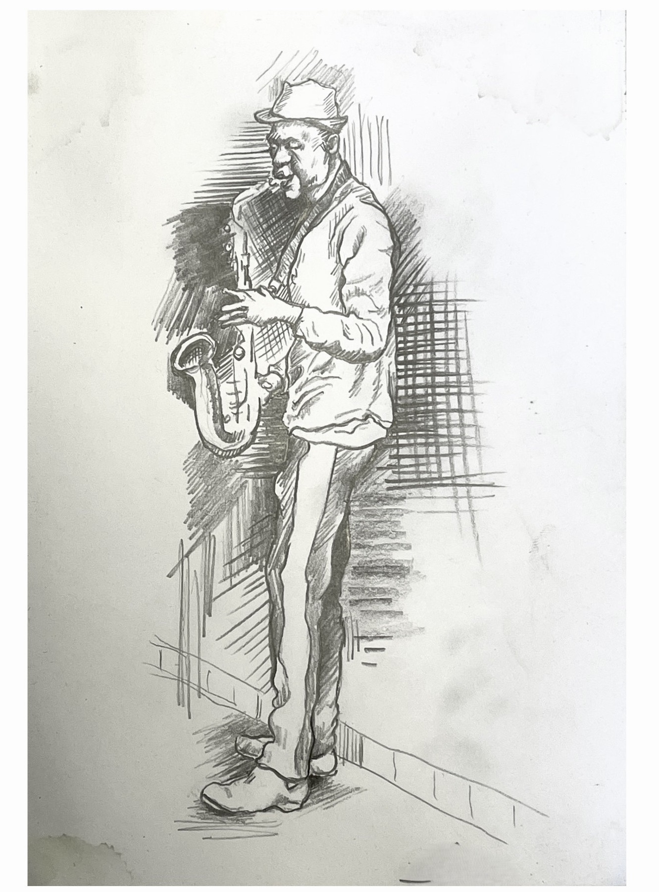
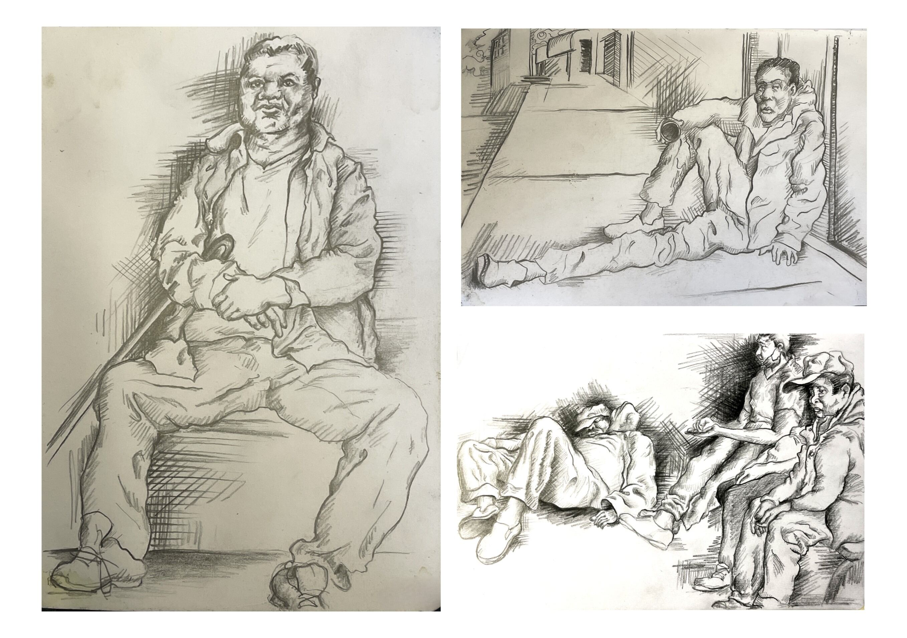

Lines That See and Speak the Essence of Being
The crosshatched strokes breathe life into weary commuters, each line a testament to resilience. Like threads in a tapestry, they weave stories of quiet strength. These sketches capture not just faces, but the unspoken dignity of those who keep the city alive.
The Unseen Architects of Dawn
Before the sun rises, emerge nurses, bakers, cleaners. Their faces etched with purpose. The modulated lines of the drawings mirror their layered lives, subtle yet profound. In their tired eyes, we see the heartbeat of New York.

Ink-Stained Grace

Unlike the bold abstractions of the painted subway series, these sketches honor realism. Crosshatching becomes metaphor: shadows deepen, light persists. Here, every stroke is a whisper of endurance, a contrast to the fractured vibrancy of cubist chaos.
The Keepers of the Underground
They ride in silence, shoulders squared against the weight of the world. The artist’s hand renders them tenderly, each sketch a love letter to the unseen. These are not just portraits. They are hymns to the ordinary that on closer look is extraordinary.

A City Built on Shoulders

New York’s pulse thrives in its people. The sketches, raw and unadorned, reject glamour for grit. In their simplicity, they echo a truth: the city’s soul lies not in its skyline, but in the steadfast hearts of those who walk its streets.

Richard Diaz
Art breathes in three parts. The seen, the shaped, and the whispered. Subject is its face, form its bones, content its pulse. To truly know a work, listen for the quiet why beneath the what and how.